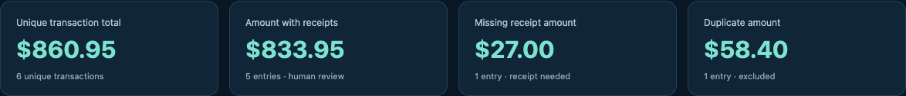
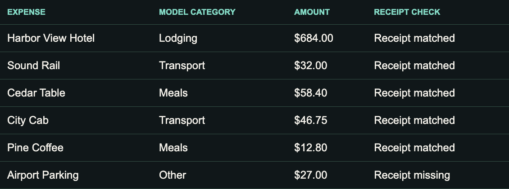

Your agent can ask your other devices
for help — and bring the result back.
Ask from your Mini. The MacBook reads them there.
The report comes back for you to review.

Your MacBook can use a model installed on your desktop.
Gemma 3 4B via Ollama
runs on the Mini.

Your own computers.
The same owner account.
Install it on each device.
Run setup and check access.
citta setupcitta doctor“Find my other computer.
Run a small task there.”